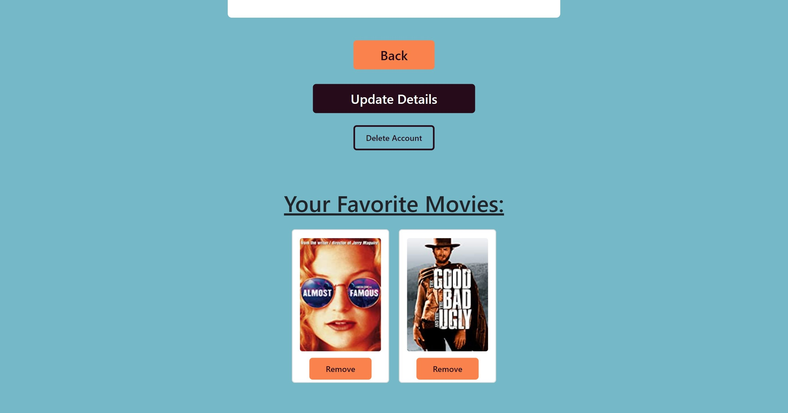

Pokedex


Overview
myFlix is a single-page, responsive application with routing, rich interactions, and several interface views. This is the client-side to the Movie API. It lets movie enthusiasts access information about different movies, directors, and genres, whenever they want. Users have the ability to create an account, update their personal data, and save a list of their favorite movies.

Purpose & Context
This is a personal project that was built to satisfy a full stack development course project at CareerFoundry. This project is used to demonstrate my abilities using React and JavaScript.
User Stories:As a user, I want to be able to access information on movies, directors, and genres so that I can learn more about movies I've watched or am interested in.
As a user, I want to be able to create a profile so I can save data about my favorite movies.

Objective
Using React, build the client-side of a movie app based on its existing server-side code (REST API and database)
Approach
Technologies: React, React Redux, Bootstrap, JSX, Parcel, Node
- Create Repo and Set up Parcel
- Used JSX to create MainView, MovieCard, and MovieView components
- Connected components myFlix API to fetch movie data from the database
- Added login and registration views, and integrated with MainView component
- Added some styling with React Bootstrap
- Added routing to source code
- Create director, genre, and profile views
- Director view fetches and displays data about the a particular director and lists their other movies
- Genre view fetches and displays data about a particular genre and other movies with same genre
- User Profile allows user to update their information, deregister, display user's favorite movies, and allows to remove a favorite movie
- Code to send JWT token alongside client requests for authenticated users
- Implement client-side form validation for login and registration views based on server-side validation
- Added React Redux to implement the Flux design pattern

Challenges
This project was by far the most challenging project I have done so far. This was my first time using React, and it took a little bit for me to understand it. To help understand it, I would reread the lesson information, along with supplementing it with videos. Once I understood how it worked, I really appreciated the way it is broken out into components. Another challenge I had was with the Profile View. It took a lot of google searches and help from the tech community to figure out how to get the users favorite movies to display. Once I got through everything I wanted I felt so accomplished. If I was to go back to this project I would add a few more features, like being able to search for actors and see all their movies. And letting users add new movies to the database.

Duration
This project took a little under 2 months. The challenges I experienced set me back a couple weeks.
Credits
Role: Lead developer